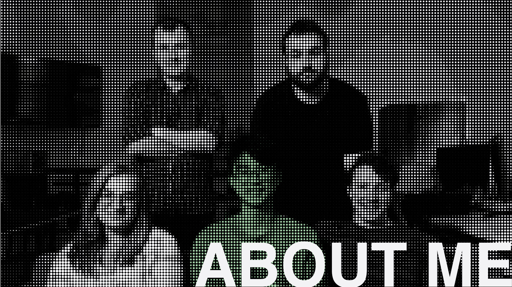
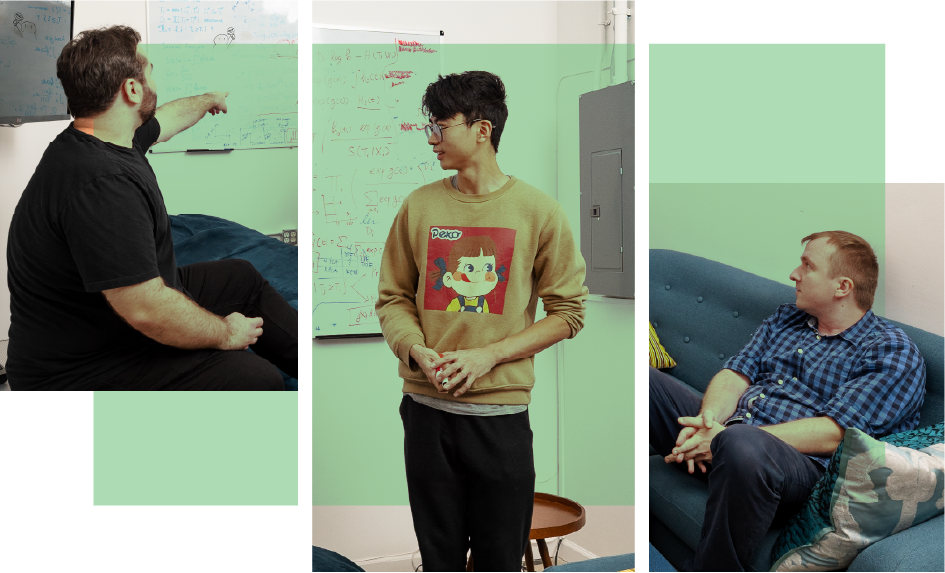

Ataraxis was co-founded by Jan Witowski and Krzysztof Geras, with AI pioneer Yann LeCun as an advisor. Ataraxis is focused on better cancer risk assessment.

I joined Ataraxis AI in 2023 as one of the first two engineers while conducting research at NYU Langone Health. As a founding member of a five-person team, I helped launch the company and contributed to securing $4M in seed funding. Since then, I have played a central role in developing and validating multimodal histopathology models using data from more than 15 hospitals. I was also the second author on preliminary results that proved instrumental in raising over $20M in Series A funding.
My current research focuses on developing deep learning models that predict patient outcomes directly from histopathology data. A major part of my work involves combining survival analysis with causal inference to identify which patients are most likely to benefit from additional or alternative treatments.
SELECTED PUBLICATIONS
Improving Information Extraction from Pathology Reports using Named Entity Recognition
Ken Zeng
, Tarun Dutt, Jan Witowski, GV Kranthi Kiran, Frank Yeung, Michelle Kim, … Freya Schnabel, Linda M Pak, Yiqiu Shen, Krzysztof J Geras
Squeezing performance from pathology foundation models with chained hyperparameter searches
Joseph Cappadona, Ken Zeng
, Carlos Fernandez-Granda, Jan Witowski, Yann LeCun, Krzysztof J Geras
Multimodal Risk Prediction Model for Breast Cancer Recurrence
Jan Witowski, Ken Zeng
, Joseph Cappadona, … Francisco J Esteva, Lajos Pusztai, Yann LeCun, Krzysztof J Geras
POSTERS
Preliminary validation of a multi-modal AI for stratification of early-stage breast cancer patients utilizing a foundation model for digital pathology
San Antonio Breast Cancer Symposium 2024
Squeezing performance from pathology foundation models with
chained hyperparameter searches
NeurIPS Self-Supervised Learning 2024
AI foundation model for breast cancer characterization and outcome prediction
European Society For Medical Oncology 2025
CONTACT
Email: kengaryzeng@gmail.com